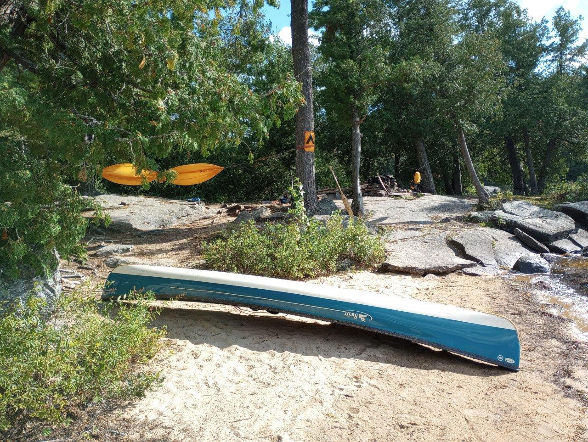
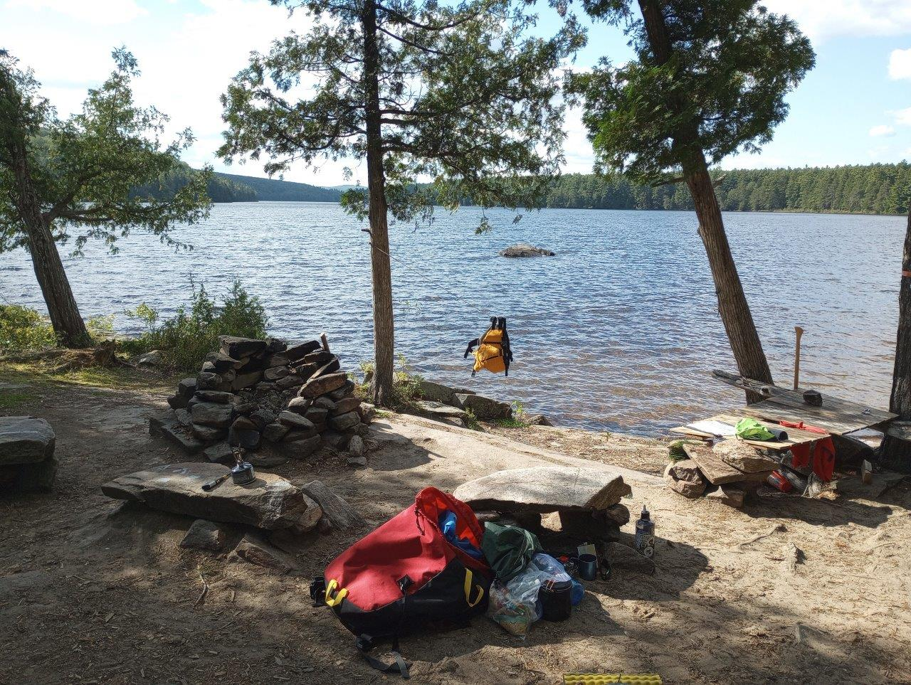
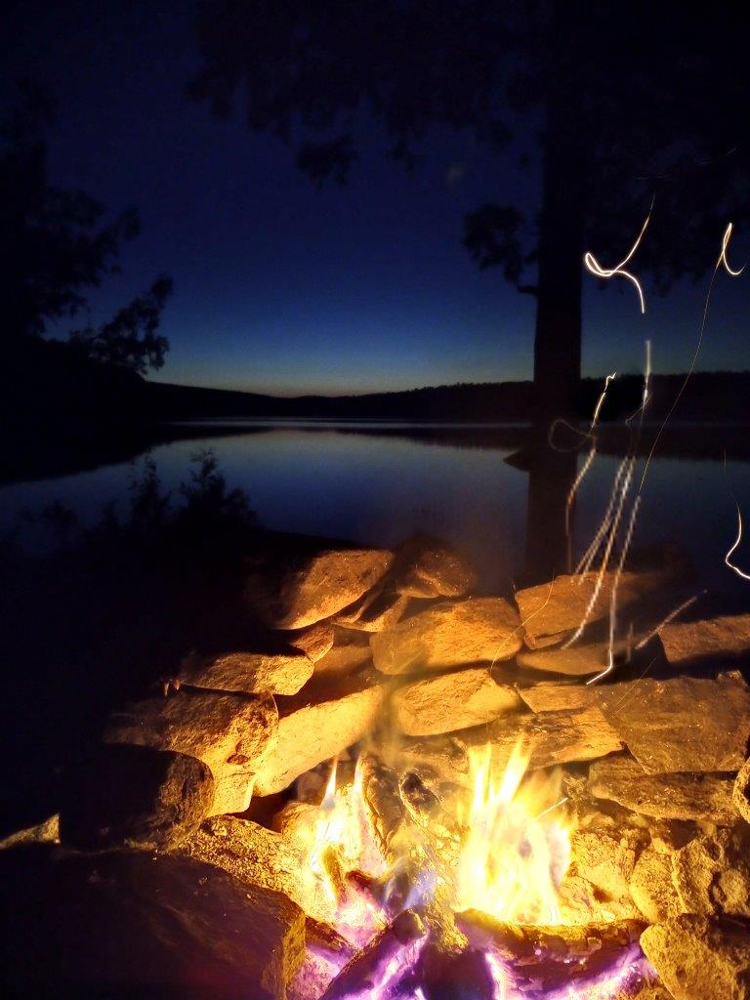
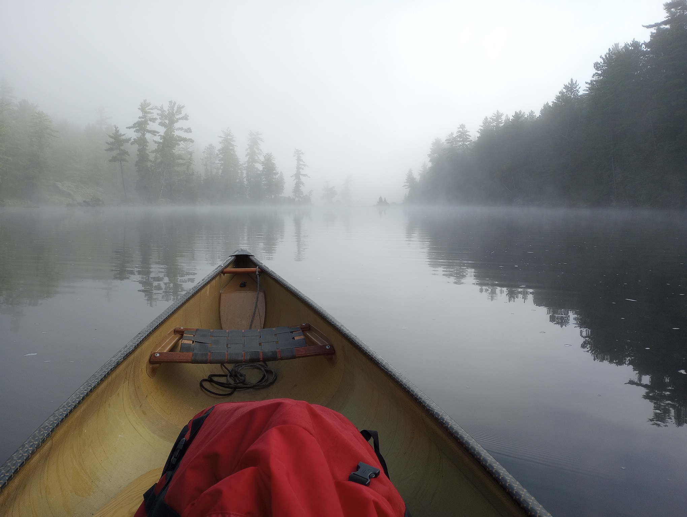

|
2023 Sept 14-15 - Barron River to Stratton Lake and back (Squirrel Rapids Access Point)
Day 1: Barron River - Bringham - Opalescent - Ooze - High Falls - St. Andrews - Stratton
Day 2: Same as Day 1 but in reverse.
Campsite circled in red, lunch sites circled in blue.
Total Distance: 32 km
# of Portages 16 (6.4 km)
Longest Portage: 750m |
 |
Starting out from the Squirrel Rapids access point, early start but kind of windy and overcast, the wind was strong in the Barron Canyon and sustained all day until late in the afternoon. |
 |
Nice waterfall at Brigham Chute on the 2nd portage on the Barron River. |
 |
Arrived at the campsite just after 1:30pm, about 5.5 hrs of paddling and portaging for the day. Lots of people between Brigham Lake and Stratton, Opalescent was very busy and lots or people on the portages. |
 |
Got in early enough to grab the best site on the lake, good open campsite with a tons of wood and space. Good views down the lake, but definitely on the windy end of the lake. |
 |
Wind finally died down around 6pm, was able to get a nice fire going and enjoy the sunset. The hammock was a great addition to the packing list. |
 |
Enjoying the last bit of light with the campfire, especially nice since I didn't have to collect wood. Feeling a bit sore at this point, I think ~800m is about the maximum length I'd like to one-carry portage solo, beyond that I may have to drop the canoe/bag half way (not a true double back). |
 |
A calm paddle out of the 2nd day, but lots of mist in the morning (especially here on St. Andrews Lake), nice and cool as well. Temperature got to around +4 overnight (based on the forecast) but I slept pretty good. |
 |
High Falls Lake also looking quite calm and misty. On the way out most people were still asleep as I paddled past them on the big lakes (Stratton/St. Andrews), a few people up on Opalescent, and a lot of day paddlers and other big groups on the Barron River for the return. Overall a good "training" trip, did all the portages single carry which was the goal, and all in the hydromocs as well. |